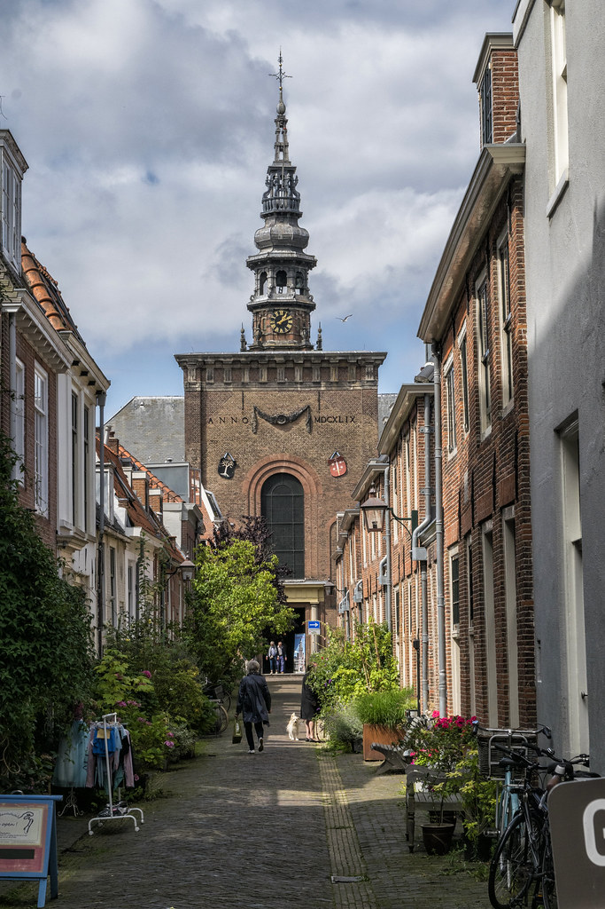

Haarlem (Netherlands) is a Dutch town located 20 km from Amsterdam.
This is a very beautiful and cozy place with many attractions, and, unlike the capital, there are not many tourists.
Haarlem is a city located in the northern part of the Netherlands on the Sparne River.
It is the capital of North Holland. The population is about 156 thousand people. This is one of the oldest cities in the Netherlands, the first information about which dates back to the X century.
In the 1150s, a large village turned into a vibrant city. The name Harlem itself is derived from the words Haaro-heim or Harulahem, which literally translates as “a high sandy place where trees grow”.
You can verify the name by looking at the photo of Haarlem.

Over its centuries-old history, Haarlem survived many invasions (sieges of 1270, 1428, 1572-1573), severe fires of 1328, 1347 and 1351, the plague epidemic in 1381.
The city is considered the 17th century as a golden age for the city; economic growth began in the country, a large number of wealthy citizens started to appear, and art began to develop.
And the 17th century in Holland is, first of all, the heyday of architecture. Most of today's attractions were developed at that time, and are still influential to this day.
Haarlem (Holland) is a small city, but there are no problems with hotels.
The cheapest room in a 3 * hotel for two will cost around $80 (breakfast included) per night.
Haarlem is a fairly "compact" city, so all the hotels are close to attractions.
There are many cafes and restaurants in the city, but the prices are quite high.
For example:
the average bill in an inexpensive restaurant is 30-40 euros for a dinner for two;
dinner for two in a middle-class restaurant will cost 60 € on average;
a glass of local beer 0.5l - 5 €;
a cup of cappuccino - 4.5 €.
It is clear that cooking yourself is much more budget-friendly. The cheapest products can be found in chain stores Albert Heijn, Jumbo, Dirk van den Broek, ALDI and Lidl.